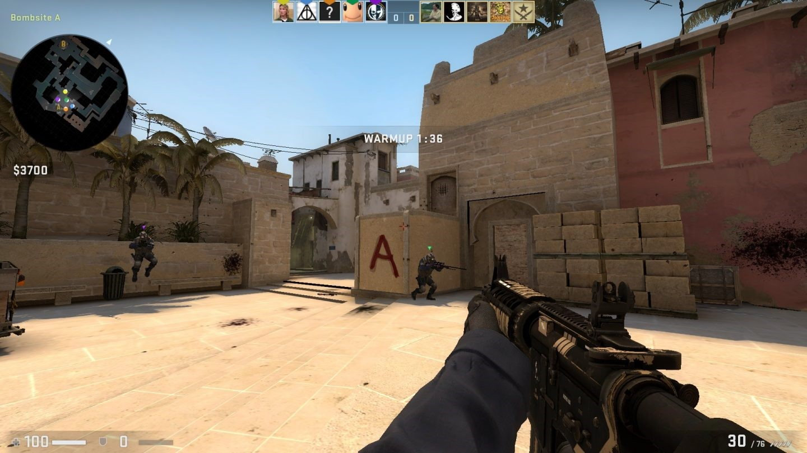
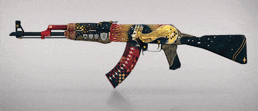
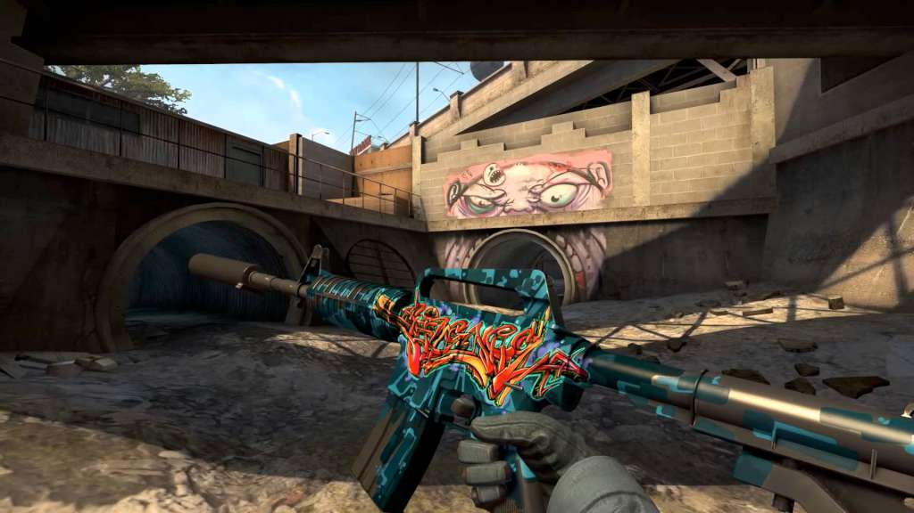
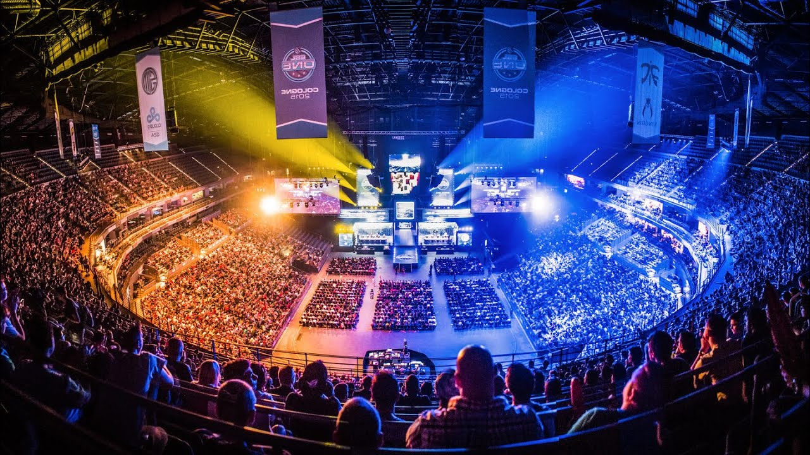

Introduction
Counter-Strike: Global Offensive (CS GO for short) is a competitive first-person shooter that was released by Valve on August 21, 2012. The premise of the game is a two-team game wherein one team is composed of terrorists and the other counter-terrorists; the objective being for the counterterrorists to stop the opposing side from planting a bomb and detonating it.
Gameplay
Other than the aforementioned default gamemode there are more traditonal ones such as deathmatch which, however, are not very popular in comparison. CS GO is unique in terms of its "gunplay", in other words, the feel of its guns. This is because it is made in a way that promotes a high level of mechanical skill. It does this by making the recoil patterns for a certain gun consistent, meaning that one can memorize it and land all bullets in a magazine on-target. It is also quite punishing in terms of gameplay because in many cases a single headshot can lead to death.
 |
 |
| Highly skilled player getting an ace | An ace with an AWP sinper rifle |
|  |
| A gameplay still |
Background
CS GO is the third instalment in the Counter-Strike series, the first being Counter-Strike and the second Counter-Strike: Source. These two games garnered a sizeable player base when they were released (the year 2000 and 2004 respectively) which immediately bled over to the nascent esports scene at the time, owing to the competitive nature of the game. Valve wanted to capitalize on this and make a new game that could hopefully build upon the success of the first two games and bring the series up to date with modern standards; and thus CS GO was born.
Release
CS GO was a highly anticipated game, the player base having waited for 8 years since the release of CS Source, and it aimed to not only improve graphics (as is traditional in subsequent games in a series) but also bring together the community which had split between the two previous games. Upon its release, however, the game universally met with criticism. This was due to poor performance and a plethora of bugs, but also a completely foreign “feel” of the game compared to one of its predecessors which people had grown accustomed to.
Improvements
After its rocky start Valve was determined to not abandon their game and continued to update and patch the game, bringing in new players as well as swaying old ones. But the player base was still relatively small compared to the numbers we see today; it only truly exploded in 2014 with the introduction of skins.
|  |
| A series of skins |
|  |
| A skin in-game |
Skins are cosmetic weapon finishes which are purchased with real money. This addition brought with it a massive influx of players, most likely because of the novelty they presented in an otherwise bleak game. Skins also introduced an entire micro-economy surrounding the game because one would be able to trade these skins with other players as well as sell them on the Steam (digital video game distribution platform owned by Valve) market. With a large player base, it was only natural that the corresponding esports scene exploded, with many tournaments taking place and record-breaking viewership of all CS GO events. This was also certainly thanks to Valve supporting tournaments, granting big prize pools to incentivize players.
|  |
| A CS GO tournament |
Legacy
CS GO has undoubtedly left its mark on the gaming scene. It might not have been very innovative in terms of technology, but it catapulted esports into the mainstream for the first time with the popularity of its tournaments, rivalling even those of traditional sports. It is still highly popular today, being the most played game on Steam at almost any given moment, and consistently being in the top viewed categories on Twitch. It has also set the standard for competitive fps being one of the very first to have defined the genre.